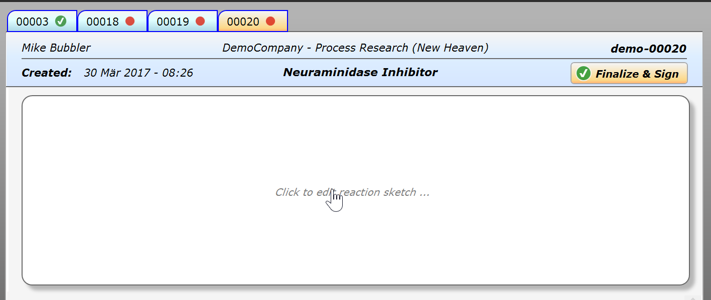
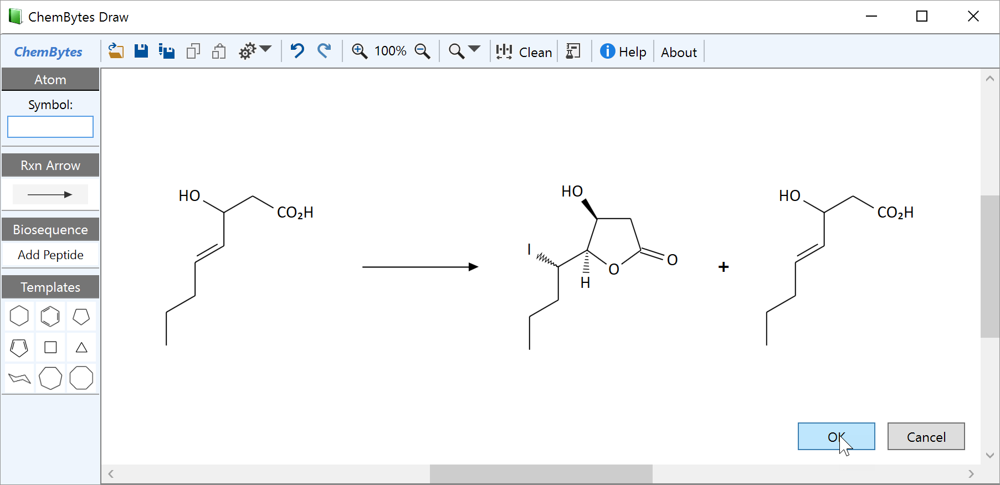
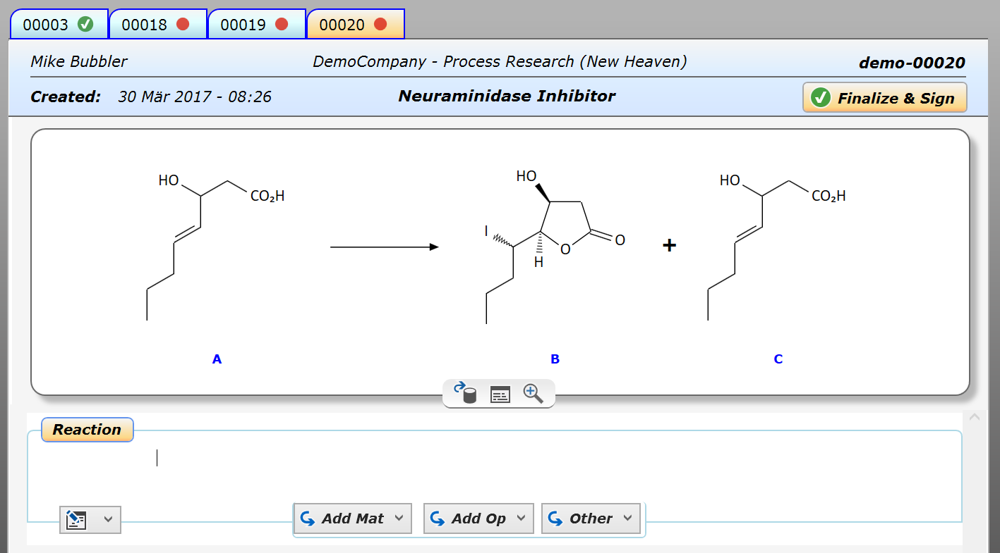
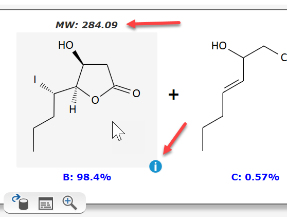
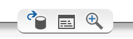

2) Draw a Reaction Sketch
Click anywhere inside the reaction sketch area to open the integrated reaction editor:

The appearing ChemBytes Draw reaction editor provides most functionality you might be used to from your current chemical drawing package. Its use is very intuitive, but not identical to other drawing tools. So best first read the short QuickStart guide (Help button in toolbar), which will bring you up to speed quickly.
After either drawing, reading from file, or pasting from another drawing package, the editor might look like this:

|
General reaction sketch rules:
|
Finally click OK. This closes the editor and returns to the experiment, which now contains the reaction sketch:

Note how each component is assigned a label by the application, which later will automatically be referenced in the experiment section. - When moving the mouse over a reaction component, a selection rectangle appears, with the component molecular weight displayed on top of it :

Clicking the info icon at the bottom-right corner launches a powerful Web search for this structure, using the ChemSpider web service by the Royal Society of Chemistry, providing with a plethora of public information about the selected compound (patents, spectra, toxicology, properties, vendors, etc.).
The sketch toolbar at the bottom of the reaction sketch provides additional powerful tools for searches within the Espresso ELN environment:

The toolbar buttons provide following functionality:
- The leftmost button searches for the current reaction sketch and substructures within your local notebook, or across your organization if attached to a server. This can help you to find out if this reaction already was performed and what the outcome was.
- The table button summarizes all experiments containing the same sketch within your current project. This allows a quick overview of what's been done so far in the context of this specific reaction.
- The zoom-in button finally allows to seamlessly zoom into the reaction sketch, which is useful in case of more complex structures.
Next step: Add materials ...